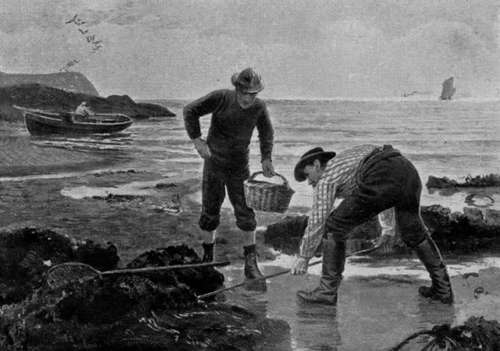

Introductory. Charts, Tides, Etc. Part 2
Description
This section is from the book "Sea Fishing", by John Bickerdyke. Also available from Amazon: Sea Fishing.
Introductory. Charts, Tides, Etc. Part 2
Bass, pollack, coalfish, and, less often, the grey mullet, are fish which, when in the humour, take the fly readily enough ; and by fly I mean just that combination of fur and feather, which is intended by the salmon fisher when he uses the same expression, and represents a small marine creature of some kind or other. Of course there is no rise of pale watery duns, or jenny spinners, or mayflies on the sea. An odd butterfly or two, migrating from the Continent, may perhaps be drowned and eaten by a hungry billet or mackerel, but fly fishing in the strict sense of the word does not exist.
Bass, particularly if large, are not easily caught, and in the grey mullet the angler has a fish which will test his skill and patience beyond measure. In addition to bottom fishing as illustrated in the reports of the excellent takes of fish made at Deal, and fly fishing, in respect of which I refer now only to three fly-taking sea fish, there is ordinary float fishing in shallow water (such as one finds in harbours) for flat-fish, smelts, whiting pout, and other small fish. Spinning, or trolling as the Scotch term it, can be carried on in the sea for just the same fish as will take the fly, and live baiting, very much after the methods of jack fishermen, can be practised with much advantage in respect of a great variety of sea fish. Leaving legendary fish out of consideration, no pike ever afforded the angler such wonderful sport as do the tarpon of the Gulf of Mexico. Was it not related of a certain tarpon-slayer that, having been towed about for some hours by a fish which he had hooked, he landed on an island, tied his line to a tree, and rowed to the mainland for assistance ? Further, that on his return the island had disappeared ? The story is one for the accuracy of which I cannot personally vouch, but it certainly serves to illustrate the immense strength of this big herring, or ' silver king,' as it is often called. It is not surprising that the tarpon fishing of the Gulf of Mexico grows in popularity apace. There are now hotels mainly supported by anglers and called 'tarpon hotels.' A great many Englishmen are beginning to make annual visits to America, simply to enjoy this novel form of sport. More than this on tarpon I must not say, for later on will be found a special contribution on the subject, written by Mr. A. E. Harmsworth.
Turning to still larger fish, we come of necessity to sharks and whales. As regards foreign sharks, both Mr. Harmsworth and Mr. William Senior have something to say. With reference to whales, I am constrained to admit that they do not find a place in the angler's creel. They are not, strictly speaking, fish ; yet they afford such excellent sport when harpooned—sport which involves so much courage, skill, and endurance, and brings out so many of the highest qualities of man in those who pursue them—that the chapter on Whale Fishing by Sir H. Gore-Booth which brings this volume to a conclusion will surely be read with interest by even those who have no inclination to join the huntsmen of the sea in their pursuit of the largest existing mammal of creation.
In addition to the branches of sea fishing or sea hunting which I have already mentioned, I have borne in mind that sea fish are frequently an important food item on board yachts, and that yachtsmen sometimes desire to fish in places where, owing to the depth and force of the tidal currents, very heavy leads are required and long lines or the ordinary hand lines must be brought into requisition. I propose, therefore, to describe hand lining, so far as may be necessary, and to give such general information about long lines, trots, and two or three kinds of nets, as may be useful to yachtsmen.
Fish cookery is touched on here and there throughout the following pages, but I would here remind the sea angler that cod and most other large sea fish are not a little improved for the table, if they are knocked on the head and gutted as soon as caught, and towed after the boat for an hour or so. They can be also sliced in the manner known as crimping. The operation, performed at the fishmonger's long after the fish is dead, has no value whatever ; but it is commonly done, and a higher price obtained for the fish in consequence.
Perhaps it may be thought that any form of fishing in which hook and line do not come in is unsportsmanlike. But a very great deal of amusement can be obtained on certain parts of our coasts during spring tides by hunting among rocks at low water for large crabs, lobsters, and congers. The weapon is an iron hook, the use of which really involves more skill than many methods of line fishing. So I have made shell-fish hunting, including prawning and shrimping, a part of my subject.
HUNTING AMONG ROCKS AT LOW WATER.
The amateur sea fisher would indeed have reason to be thankful to anyone who would compile a guide, showing exactly the sport to be expected at all seasons of the year at every fishing town or village round the British and Irish coasts, with the marks of the best fishing ground, and information as to local baits obtainable. I am afraid such a book will never be written. Mr. F. G. Aflalo's ' Sea Fishing on the English Coasts ' is a first step in that direction, and it is to be hoped that the subject will be carried much further. One chapter is here devoted to an endeavour to give a good general idea of the fishing round our coasts ; but for the rest the man who seeks sport in the sea will have to find out much for himself. If a member of the British Sea Anglers' Society he can, of course, obtain the benefit of such advice as the executive of that body is in a position to give.
A word here as to this Society, which was formed with the object, amongst others, of popularising sea fishing as a sport, may not be out of place. The Society came into existence in the spring of 1893. Sir Edward Birkbeck, Bart., is its President, and it includes among its supporters Lord Brassey, Lord St. Levan, Sir Harald G. Hewett, Bart., Sir George R. Sitwell, Bart., M.P., Sir Albert Rollit, M.P., Captain Lambton Young, Mr. R. Biddulph-Martin, M.P., Mr. R. B. Marston, Mr. H. Cholmondeley Pennell, Mr. W. Senior, Mr. T. A. Dorrien-Smith, Mr. J. C. Wilcocks, and a number of other gentlemen who are either enthusiastic sea fishers or have shown an interest in the preservation of our sea fisheries and the welfare of sea fishermen. The gentleman who was until 1895 honorary secretary, and may be termed the principal founder of the Society, is Mr. F. G. Aflalo. He has been succeeded by Mr. Henry Ball. I had the honour of presiding over the public meeting at which the Society was formed. Provided the British Sea Anglers' Society, which has offices at 66 Haymarket, is sufficiently supported, it will be able to do a very great deal for the benefit, not only of its members, but of many others who are interested in sea fishing. It is in the first place a corporate collector of information from corresponding members dwelling at or visiting different parts of the coast. It aims at establishing branches in all important sea-coast towns, with boats and men of their own, and has in many places made arrangements with the boatmen and hotel-keepers for special terms for its members. It has already induced some of the railway companies to issue tickets to its members at greatly reduced fares to certain places on the east coast during the autumn months.
Continue to:
- prev: Chapter I. Introductory. Charts, Tides, Etc
- Table of Contents
- next: Introductory. Charts, Tides, Etc. Part 3
Tags
fishing, hooks, bait, fishermen, spanish mackerel, mackerel fishing